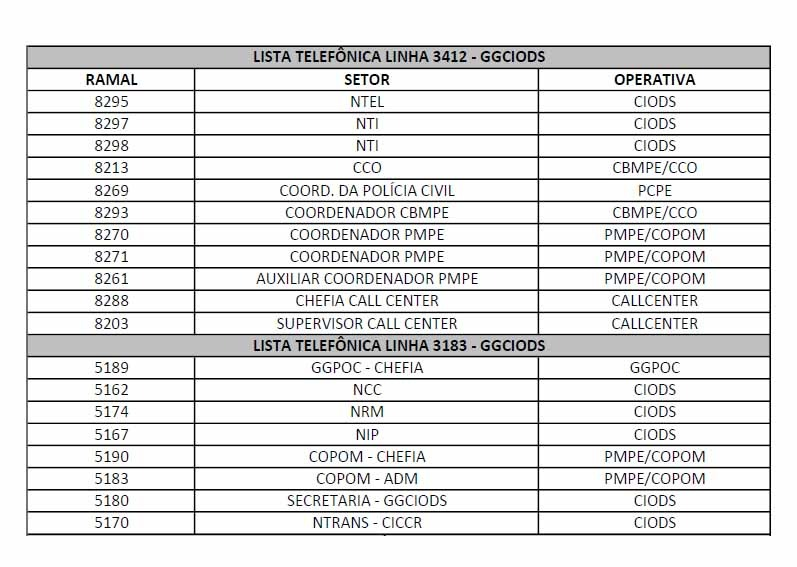

SE VOCÊ NÃO ENCONTROU SEU PROBLEMA NO CHAT-BOT, PROVAVELMENTE NÃO É ALGO DA ALÇADA DO NTI.
ASSIM, ENTRE EM CONTATO COM ALGUM DOS TELEFONES ABAIXO:
Imagem não encontrada. Verifique se o arquivo está em public/imagens/telefones.jpg'">
O NTI é responsável por Computadores, Redes e Sistemas.
Telefonia, HTs e outros tópicos são encargos de outros núcleos.
A equipe NTI agradece pela sua interação!